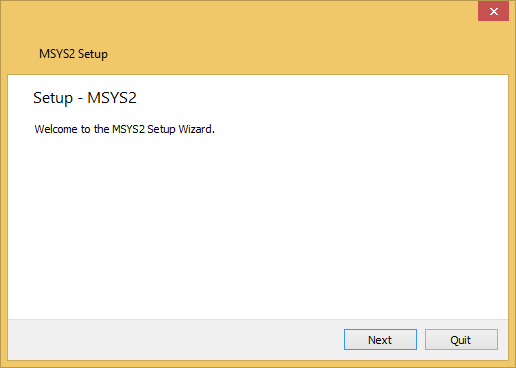
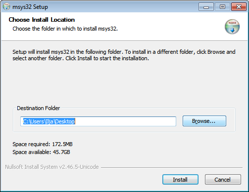
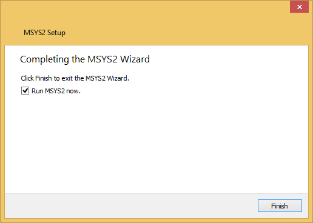
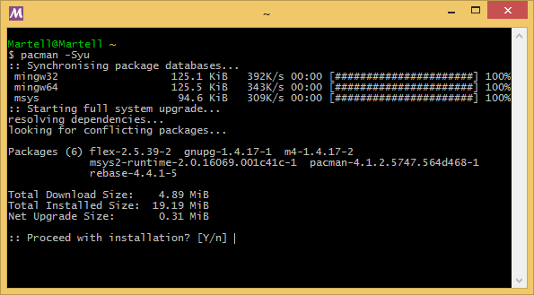
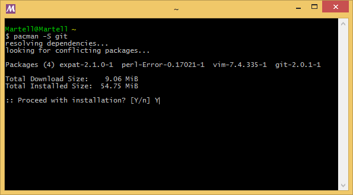

-
Download and run an .exe - msys2-x86_64 for 64bit, msys2-i686 otherwise
-
Click "Next":
 -
Enter Installation Folder (ascii, no spaces nor symlinks, short path):
 -
Tick Run MSYS2 now:
 -
Update the system packages with Pacman -Syu:
Then close MSYS2 and restart the shell
 -
Now Pacman is fully committed to the windows cause :)
 - Take look at Detailed MSYS2 install guide for additional details and troubleshooting.
Authors and Contributors
Support or Contact
- sourceforge.net/p/msys2/wiki/MSYS2 installation
- sourceforge.net/p/msys2/tickets
- sourceforge.net/p/msys2/discussion/general
- IRC Channel
Donations
Webmoney transfer (Alexey Pavlov @alexpux)
Wallets:
- E271473533800
- R691797957081
- Z110171850957
Or via button: